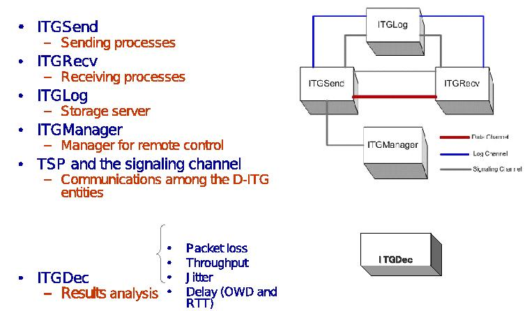
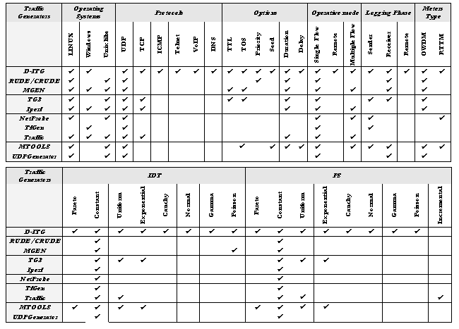
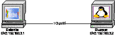
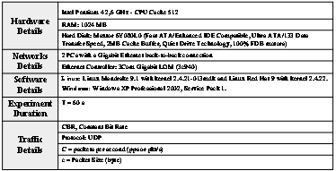

We compared our tool with several of the currently available and most widely adopted traffic generators and we found that D-ITG offers several improvements in terms of both functionalities and performance. The presented architecture and the comparative analysis shown in this page confirm our assumption.

Before presenting experimental results, we present a complete description of D-ITG features. D-ITG gives the ability to generate network traffic on remote network segments for a "What If" analysis during the planning and management of networks. Using D-ITG is useful in order to perform highly specific tests on remote network segments from a central management station. This provides a fast and efficient way to perform troubleshooting, stress testing on specific devices and capacity planning. Table 3 presents a comparative schema that summarizes D-ITG characteristics and contrasts it with respect to other widely used traffic generators. In [10] a detailed reletad work analysis is reported. D-ITG is currently available both on Linux and Windows platform. It presents both a multithread and a multitask implementation. The supported protocols are: TCP, UDP, ICMP, DNS, Telnet, VoIP (G.711, G.723, G.729, Voice Activity Detection, Compressed RTP). Currently we are working on SMTP, HTTP, FTP, P2P, SNMP, MPEG protocol implementation. The provided stochastic processes both in the case of PS and IDT are Constant, Uniformly distributed, Exponentially distributed, Pareto distributed, Cauchy distributed, Normal distributed, Poisson distributed, Gamma distributed. Thanks to this wide range of supported stochastic processes it is possible to reproduce a broad range of traffic mixture. D-ITG provides setting of generation seed: this option gives the possibility to repeat different experiments using the same seed. D-ITG can perform both one-way-delay (OWD) measurement and round-trip-time (RTT) measurement, packet loss evaluation, jitter and throughput measurement. Another innovative feature of D-ITG is the possibility to store information both on the receiver and on the sender and, additionally, to remotely store information.

As far as this last feature, D-ITG enables the sender and the receiver to delegate the logging operation to a remote log server; this option is useful when the receiver has limited storage capacity - e.g. PDAs, palms, etc. - and when log information must be analyzed "on-the-fly", for example, in case the sender is asked to adapt the transmission rate based on channel congestion and receiver capacity. D-ITG permits the setting of TOS (DS) and TTL packet field. Both experiment duration and delay (initial time of the experiment) can be set. The communication between sender and receiver is made by using a separated signaling channel that implements a protocol for the configuration of traffic generation experiment (Traffic Specification Protocol). Furthermore, the sender can be remotely controlled by using ITGapi. This means that the D-ITG sender can be launched in daemon mode and waiting for commands, so that generation of traffic flows can be remotely controlled. By using this feature is possible to test traffic engineering algorithms in a real network
D-ITG is able to reach high (receiver and sender) data rate. In particular, in a local environment (sender and receiver over the same Linux platform) the maximum data rate is equal to 511 Mbps both at sender and receiver side; in a distributed environment (sender and receiver over two different Linux platforms) the maximum data rate is equal to 612 Mbps at sender side and 611 Mbps at receiver side. As far as this last point in this section in order to demonstrate D-ITG performance we present a performance analysis study both over Linux and Windows platform. We study the D-ITG performance over a local machine too in order to (i) study the interference between sender and receiver process and (ii) isolate the dependencies from network dynamics. In Table 4 and Figure 12 all parameters of our experimentation and the network testbed are summarized.
| Figure 2: Experiment Testbed | Table 2: Experiment Parameter | |
|
 |
 |